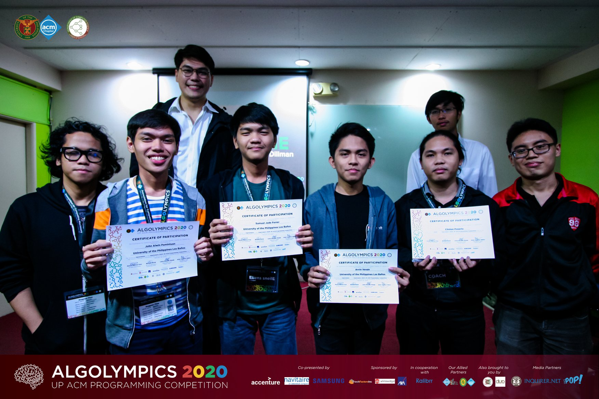
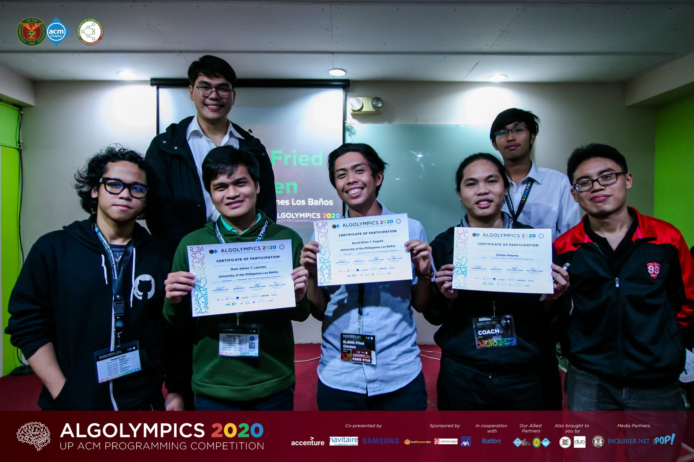
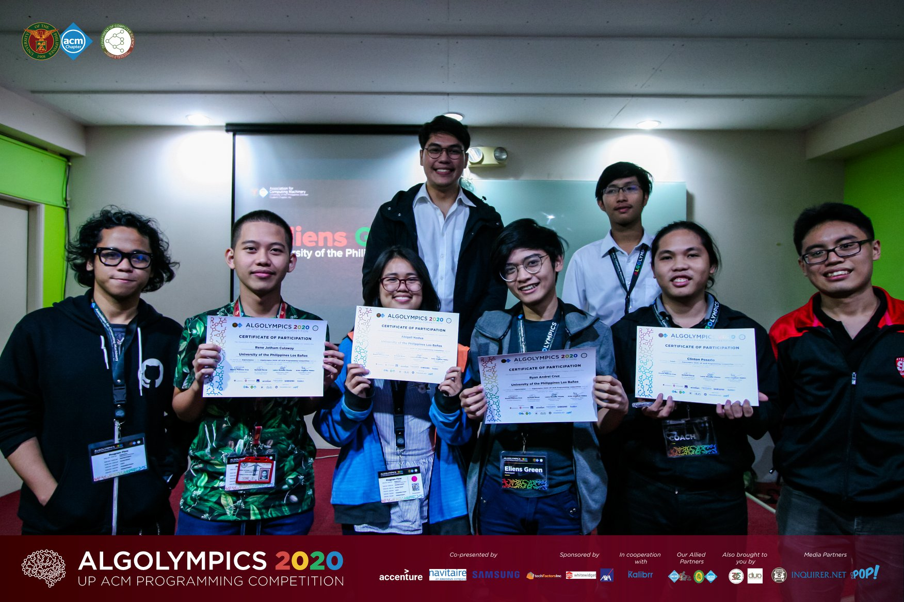

- Thu 27 February 2020
- News
- Clinton E. Poserio
Three teams from UPLB participated in the recently concluded Algolympics 2020 Final Round last February 22, 2020. The final round is an ACM ICPC-like contest wherein teams are given a set of programming problems to be solved in a given amount of time. Out of 19 participating teams from nine local universities, the three teams from Team Eliens ranked 4th, 8th, and 17th place. The three teams are as follows.
Team Eliens - sneilE is composed of John Alwin Pamintuan, Samuel Jade Ferrer, and Arvin Verain, ranked 4th.
Team Eliens - Fried Chicken is composed of Mark Layones, Ethan Paguila, and Louise Gabrielle Talip [1], ranked 8th.
Team Eliens - Green is composed of Rene Jotham Culaway, Abigail Nadua, and Ryan Andrei Cruz, ranked 17th.
The overall champion came from Ateneo de Manila University (AdMU), followed by a team from UP Diliman, and then by another team from AdMU. The official final scoreboard is available at this Facebook link.
Team Eliens would like to thank their sponsors from the Institute of Computer Science. The team will continue their practice and training to prepare for their next competitive programming contest.
| [1] | she had a prior (debate) contest to attend to; participated in the preliminary round. |